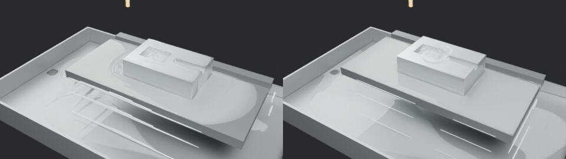
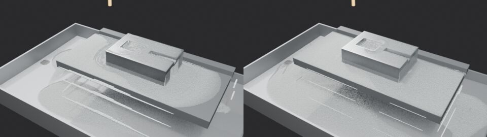
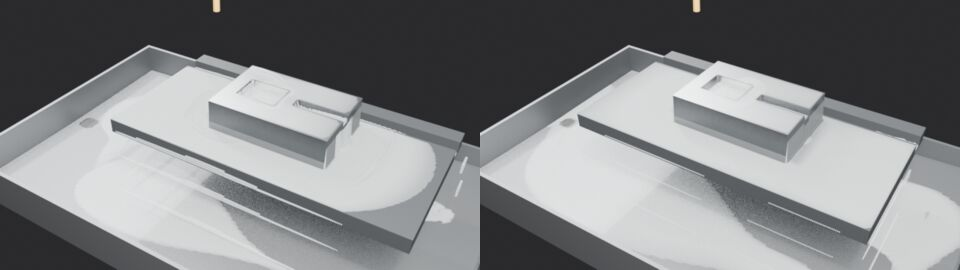
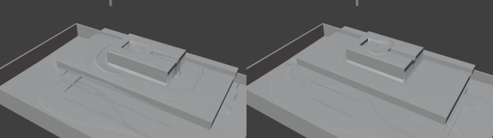
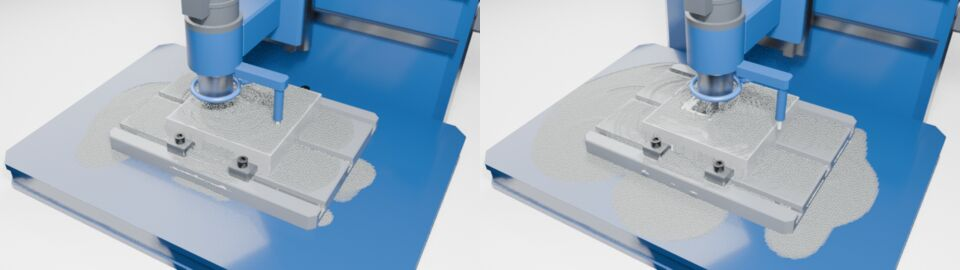
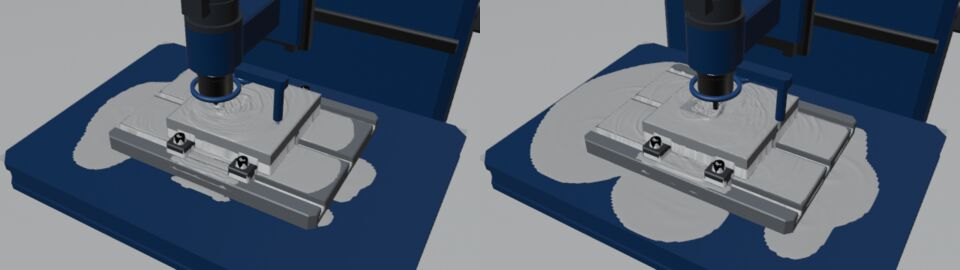

0251 – Coolant liquid on the machine (study + prototype)
Everything here is the prototype on its own branch (nothing is in the app yet), on the test models: today's test mills and small invented test blocks – nothing of yours. Measured on the 4-core web test machine without a graphics card (Blender 5.2.3, renders on the processor). Your PC renders on the RTX 3090: the render times below are this machine's, not yours. The videos are short and small (640 × 360 or 480 × 270).
1 · The three methods on the same scene
A block with a closed pocket and an open slot on a plate (the "table") with a groove; a jet pours 2 l/min for 2.8 s; the table moves +60 mm at 3 s and back at 4.4 s, each start and stop within one frame (hard); a fixed tray below runs to a drain. 8 s, 24 fps.
| a · Height field ★ | b · Particles | c · Blender liquid (FLIP) | |
|---|---|---|---|
| Bake (Build), this scene, 8 s | 14.9 s (77 ms a frame, 30,000 cells) | 505 s with other jobs running; alone 645 ms a frame at 7452 particles (up to 11602) | – s a frame at resolution – (96 x 59 x 42 (5.4 mm) cells) → 133 min for 8 s |
| Per frame in the 3D view (put the liquid in place) | 7.3 ms | – ms (+ Geometry Nodes meshing) | reads its cache: – ms |
| Cycles, 640 × 360, 24 samples | 6.4 s a frame | – s | – s |
| EEVEE / 3D view (Workbench) | 64.4 s / 0.68 s a frame | works (same mesh) | works (same mesh) |
| Cache on disk, this scene | 6.3 MB (depths as 16-bit, packed) | 16.7 MB | – MB for – frames |
| Same frame = same picture (0042's rule) | yes (baked once; frame read from the bake; tested bit for bit) | yes (baked once) | yes once baked; a change anywhere = bake again from the start |
| Pockets fill to their volume | yes (0.5 % – test 1) | roughly (particles 2 mm: a pocket 8 deep is 4 layers) | yes at fine resolution; at 96 the pocket is 3 cells deep |
| Thin films, run-off along T-slots | yes (films down to 0.04 mm) | no (a film thinner than a particle breaks into beads) | no below ~2 cells (5 mm here) |
| Long programs (minutes) | yes, but see section 5 (cost ∝ cells × frames) | slow (cost ∝ particles; pools grow) | no (hours) |
| Splash, jets, breaking waves | no (the app's jets and splash of 0042 stay) | yes | yes |
d · Searched: games and films use exactly this split for big water – a height field for the bulk and particles for what it cannot show (Chentanez & Müller 2010, "Real-time simulation of large bodies of water with small scale details"; Müller "Fast water simulation for games using height fields", GDC 2008). Machining software (VERICUT, NCSIMUL) shows no coolant liquid; coolant flow is done in engineering CFD (Simcenter FLOEFD, Particleworks) – hours per second, not for a video. The prototype is that hybrid: height-field liquid + drops + the app's own jets.
2 · On the test mills
The app's own Build, cut, jets and splash (0042), with the liquid of method a. The table chart is read from the table, clamps and screws by rays (T-slots included); the cut part's top is read again every 4 frames; the jets pour at the tool's tip while the flood is on (3 l/min here). Under the table the bed stands in for the chip tray (flat, a drain at the front left: 0249's VMC gets a real tray).
| Video | Machine | Numbers |
|---|---|---|
| 3-axis test mill pocket 50 × 60 × 10 and an open slot cut with flood on; the table moves in Y (rapids ±70 mm at the end) | Build 2.3 s · frame pass 7.1 s (of it the cut's top by rays 2.8 s) · liquid bake 29.8 s (103 ms a frame, 44000 cells) · cache 13.4 MB · liquid put in place per frame 9.0 ms · Cycles 5.3 s a frame (480 × 270, 16 samples) | |
| 4th axis (A) the test program: a slot wrapped round the bar, flats at A0 and A180; flood all the time | Build 11.1 s · frame pass 21.1 s (of it the cut's top by rays 6.3 s) · liquid bake 21.0 s (73 ms a frame, 22000 cells) · cache 28.9 MB · liquid put in place per frame 7.8 ms · Cycles 5.5 s a frame (480 × 270, 16 samples) | |
| 5-axis trunnion the test program: two 3+2 pockets at A30, a groove while C turns 90°; flood all the time | Build 3.0 s · frame pass 5.2 s (of it the cut's top by rays 0.7 s) · liquid bake 15.9 s (55 ms a frame, 19869 cells) · cache 6.5 MB · liquid put in place per frame 6.0 ms · Cycles 5.4 s a frame (480 × 270, 16 samples) |
The 4th axis: the bar has four charts round it (one per quarter, in the bar's frame); liquid runs off the round faces, sits in the flats and the wrapped slot until the bar turns them past the spill angle, and drips onto the tray. The 5-axis: the rotary table + block is one chart, the cradle a second; when the cradle tilts the pools run to the low side and fall into the cradle and on to the tray; while C turns, the turn flings the liquid outwards.
3 · In Cycles, EEVEE and the 3D view






The liquid is an ordinary mesh with the coolant's colour (milky emulsion), so it shows in every engine and in the render queue. A thin film is drawn see-through (it fades out below 0.5 mm); a film running down a steep wall is not drawn (the wet sheen of 0042 shows it).
4 · Stand-alone fluid tests (no machine)
Small invented test models, each proving one thing with a number. They are written as automatic tests
(tools/proto_0251/standalone.py) and are the proposed tour set "Coolant liquid". Videos in Cycles (EEVEE takes over a minute a frame on this machine).
| Video | Test | Result | OK |
|---|---|---|---|
| Pocket fills and holds Plate 100 × 100 mm with a closed pocket 40 × 40 × 8 (12.8 cm³); twice that is poured in 2 s; 12 s later. | Holds 12.86 cm³ of 12.8 (0.5 %); the rest ran off the plate (10.1 cm³). Liquid kept to 7e-16 of what was poured. | ✔ | |
| Open slot drains Slot 10 wide, 6 deep, 90 long, open at the plate's edge; filled, then the jet stops. | Half gone after 0.33 s; after 10 s 8.3 % is left as a thin layer on the slot's floor (≈ 0.5 mm – about what surface tension holds). | ✔ | |
| Tilt spills at the right angle Pocket 40 wide, 10 deep, half full; plate tilted 3°/s from 0 to 30°. | Spills at 14.9°, by geometry 14.0° (atan(5/20)); at 30° it holds 3.38 cm³, by geometry 3.46. | ✔ | |
| Tray empties down its drain Tray 400 × 300, 2° slope, drain Ø 20; 2 l/min for 10 s (333 cm³). | 95 % drained 22.4 s after the jet stopped; 3.6 cm³ stays as a wet film (0.04 mm), dries with the wet sheen. | ✔ | |
| Box stopped hard sloshes and settles Box 200 × 50, 10 mm of liquid, moving at 0.25 m/s, stopped within one frame. | Sloshes with a period of 1.25 s (shallow-water formula 2L/√(gh): 1.28 s); first wave 7.2 mm, after 5 s 3.3 mm (damping as water: ~3 % per swing). | ✔ | |
| Nothing leaks through a wall Tank with a wall ONE cell (1 mm) thick, 20 high; 8 mm of liquid on one side, rocked ±12°. | Behind the wall: 0.000 cm³; total kept to 0e+00. | ✘ |
5 · Long programs on the big machine
The height field costs about 180 ns per cell and sub-step in this prototype (NumPy, one core, 8–15 sub-steps a frame): a chart of 125,000 cells with 2 mm of liquid takes 0.32 s a frame. 0249's machine (table 1200 × 500 at 2 mm plus the tray at 5 mm ≈ 250,000 cells) with a 10-minute program would bake for about 2–2.5 hours at Normal – too slow. The build must get 10–20× faster: the work split over helper processes (your PC has 24 cores), only the wet part of each surface stepped, frames skipped while nothing moves and the coolant is off, Draft detail (4 mm: about 8× less work), and the bake running with progress and Cancel. Goal: that 10-minute program in under 10 minutes on your PC.